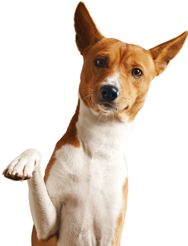

Juntos em defesa e resgate de animais domésticos em situação de risco.
SEU PET SUMIU?
Se o seu pet desapareceu, agir rapidamente é crucial para aumentar as chances de encontrá-lo, nós podemos te ajudar na busca pelo seu animalzinho!.
Procurados